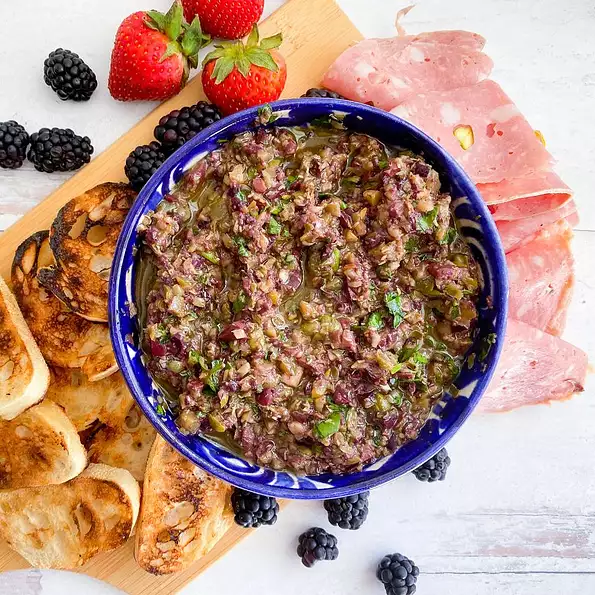

Olive Tapenade recipe

5-Minute Olive Tapenade
This recipe is done in just 5 minutes or less! Serve with crackers, crostini, cured meats, cheeses, fruits... you
name it!
Prep in 5 minutes, 8 servings.
Ingredients
- 1 (6 ounce) jar pitted green olives, drained
- 1 (5 ounce) jar pitted Kalamata olives, drained
- 1 (2 ounce) jar capers, drained
- ½ cup olive oil
- ½ cup flat-leaf parsley
- 3 cloves garlic, or more to taste
- 1 tablespoon lemon juice
- ½ teaspoon salt
- ½ teaspoon dried oregano
- freshly ground black pepper to taste
Steps
- Combine ingredients in a food processor
- Pulse 5 to 10 times until all ingredients are chopped and well combined
Continue to Hummus recipe
Go back to Odin recipes